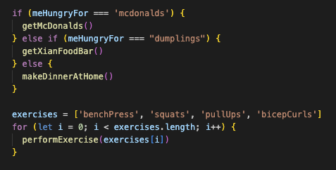
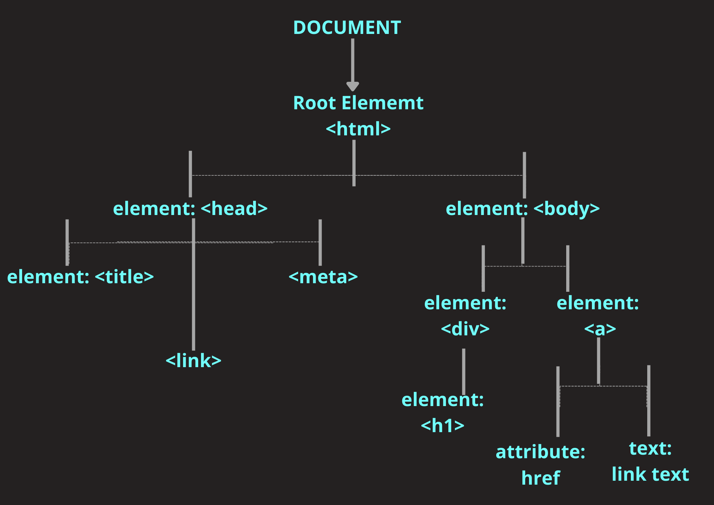

JavaScript 101
The world's most loved programming language 👀
I first dove into the world of web development through a course on Udemy. It was from a bootcamp in London called The App Brewery, and it took me all the way from HTML to modern JavaScript frameworks like React and Express. I had heard so much about JavaScript but really had no idea what it was used for, it was also my first time being introduced to programming concepts like control flow and loops. It was a rocky start, but it's where my love for programming started so let's get into it!
HOW JAVASCRIPT RELATES TO HTML AND CSS
I remember someone trying to explain that JavaScript let's you add functionality to a page, and for someone new to web development that definition didn't really sink in for me. An analogy that makes sense to me is to think of a web page a house.
- HTML: The structure of the house (e.g. framing, walls, roof, doors)
- CSS: The interior and exterior design of the house (e.g. paint, couches, lamps, artwork, plants)
- JavaScript: The stuff that allows you to interact with the house and make things work (e.g. the electricity needed to turn on a lightbulb, the plumbing required to flush your toilet, the remote for turning on your AC unit)
In saying this, part of my programming journey has been learning to accept that things might not make perfect sense straightaway, and that's ok. It's about being persistent and trusting the process that if you keep trying that you will have that “aha!” moment when things click into place.
CONTROL FLOW AND LOOPS
Control flow and loops are concepts that are fundamental not just in JavaScript, but in nearly every programming language. They are an incredibly powerful tool that help us direct which code runs and how things are repeated.
Control flow is the order in which the computer executes statements in a script (or whether statements are executed at all). An example that is close to my heart is choosing what to eat on a Sunday night. If I feel like something dirty and cheap I'll get McDonalds, maybe I feel like dumplings so I'll get Xian Food Bar, or maybe I'll be boring and want something healthy and make something at home.
Loops on the other hand are focused on repeating actions, an example that comes to mind is going to the gym. I have a list of exercises in my workout, for each of those exercises I complete a specific number of sets before moving onto the next exercise (technically for each set in each exercise I then perform a nested loop with a number of reps, but nested loops are a discussion for another time #bigOnotation).
THE DOM 👑
The DOM or Document Object Model (DOM) is a structure for representing web pages. It's like a map of a web page, that gives us as developers a way of changing it's content and style. All of the elements on a page (e.g. tables, images, text, buttons) are parts of the DOM, which are essential for using tools like CSS and JavaScript.
With JavaScript, we can use the DOM to change how a button looks when a user hovers their mouse over it, or maybe respond in a specific way when they submit a form on our website. With CSS, it provides the HTML elements that we style, but it also provides the HTML properties that we use for CSS selectors.
In other words, the DOM links the structure of a page (HTML), with the styles we apply (CSS), and the interactions we add (JavaScript). It was designed to be independent of any particular programming language, so that developers have a single, consistent framework for interacting with web pages. Even though JavaScript is the main language that we use for this, you can even use Python to manipulate the DOM!
ARRAYS AND OBJECTS
Arrays and objects are two common ways of storing information in JavaScript and other programming languages. For these to be useful we need to know how to access the data inside them!
Arrays are like a list of items e.g.
let favouriteRestaurants = [ 'mcdonalds', 'kfc', 'burgerking'
]. Each item in an array is assigned an index, starting at 0. Array
indexes start at 0 because the first position is treated as the
starting point (don't overthink it too much). We can then use these
indexes to access items inside our array using bracket notation. For
example if we come back to our previous example,
favouriteRestaurants[0] would give us
'mcdonalds', and
favouriteRestaurants[2] would give us
'burgerking'.
Objects on the other hand have what we call keys and values. A key
is like a label or name, and the value is the information stored
under that label. e.g.
let myHero = { firstName: 'Ronald', lastName: 'McDonald' }. The most common way for accessing data inside an object is to use
dot notation to access the value of a specific key, for example
myHero.firstName would give us 'Ronald'.
However in some cases you might not know the key you need to access
until the program is running, and in these cases we can use bracket
notation like we do in arrays. This is also helpful if the key you
need to access is not a valid variable name. An example of using
bracket notation with our object would look like
myHero['lastName'] would give us
'McDonald'.
WHY FUNCTIONS ARE COOL
Writing a function in JavaScript is like writing yourself a set of instructions that you can reuse. Instead of writing the same steps over and over again, you can put them inside a function and just use that instead. There are a few key reasons why functions are helpful:
- You don't have to repeat yourself (read more about the DRY principle here)
- Your code is easier to read and understand
- You can break problems down into smaller chunks (a big part of good problem-solving!)
- You can reuse code in different parts of your projects